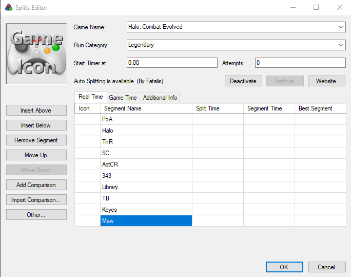

If you are here to learn about how to get started with speedrunning Halo CE, here is a list of resources and instructions on how to set up LiveSplit and your Halo CE game, including all of the necessary software that is needed to run the game.
Getting the game
If you don't have a copy of the game, you can buy it online. The Halo: The Master Chief Collection version of Halo CE will be coming out some time in the spring of 2020. If you want more information about obtaining the game in other ways, ask in the HaloRuns Discord.
Setting up LiveSplit
LiveSplit is the main timer that runners use for the game. To download it, click here. Once you have downloaded it, right click the timer and click "Edit Splits". Here, you'll see the following image. 
Under "Game Name" you will type "Halo: Combat Evolved". If done correctly, the autosplitter main from Fatalis will show up. Click "Activate" to activate the autosplitter. As of now, the autosplitter will only work with the original PC version of the game. For run category, type whatever category you are running. To add splits to your LiveSplit, Click on the table, then click "Insert Below". Under "Segment Name", you will add 9 other splits, and name them whatever you like to fit the ten levels featured in the game.
There are also some individual level autosplitters for the game as well.
Here is the link to download the IL
autosplitters
To set these up, right click your splits and select "Edit Layout". From here, click the + icon, and head to
"Control" > "Scriptable Auto Splitter". Select the file path to the level you wish to run, and add the
corresponding splits to your LiveSplit.
Other Miscellaneous Tools
There are other programs that people use for various tasks. If you want more information in particular for whatever program to use, ask in the haloruns discord. I will link a few here that most runners use.
- OBS: Open Broadcaster Software - Used for recording gameplay.
- Streamlabs OBS - Alternative software for recording gameplay.
- Rivatuner - Frame limiter used to limit fps to 120.
- Bandicam - Frame limiter used to toggle fps.
- Halo AntiCheat 2 (HAC) - Used to fix FOV and enables console commands for testing
- Widescreen Fixer - Fixes FOV for Halo (alternative for HAC2)